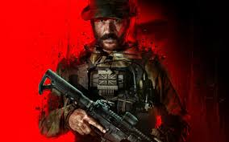

float to the right image.
 Call of Duty é uma série de jogos eletrônicos de tiro em primeira pessoa e franquia de mídia publicada pela Activision. O primeiro título da série foi lançado em 2003 exclusivamente para computadores. Mais tarde a série se expandiu para os mais variados sistemas, consoles, portáteis e smartphones. Os três primeiros títulos da série se concentram em jogos ambientados na Segunda Guerra Mundial, apresentando batalhas e acontecimentos históricos daquele período. Com o tempo, a série viu jogos ambientados na Guerra Fria, em tempos atuais, mundos futuristas até o espaço sideral. O título mais recente, Call of Duty: Modern Warfare III, foi lançado em 10 de novembro de 2023. Os jogos da série Call of Duty são publicados pela Activision. Enquanto que o estúdio Infinity Ward ainda é o principal produtor, a Treyarch também já produziu alguns títulos onde a história está interligada entre eles. Alguns jogos já foram produzidos pela Gray Matter Interactive, Nokia, Exakt Entertainment, Spark Unlimited, Amaze Entertainment, n-Space, Aspyr, Rebellion Developments, Ideaworks Game Studio, Sledgehammer Games, Raven Software e nStigate Games.
float to the left image.
Call of Duty é uma série de jogos eletrônicos de tiro em primeira pessoa e franquia de mídia publicada pela Activision. O primeiro título da série foi lançado em 2003 exclusivamente para computadores. Mais tarde a série se expandiu para os mais variados sistemas, consoles, portáteis e smartphones. Os três primeiros títulos da série se concentram em jogos ambientados na Segunda Guerra Mundial, apresentando batalhas e acontecimentos históricos daquele período. Com o tempo, a série viu jogos ambientados na Guerra Fria, em tempos atuais, mundos futuristas até o espaço sideral. O título mais recente, Call of Duty: Modern Warfare III, foi lançado em 10 de novembro de 2023. Os jogos da série Call of Duty são publicados pela Activision. Enquanto que o estúdio Infinity Ward ainda é o principal produtor, a Treyarch também já produziu alguns títulos onde a história está interligada entre eles. Alguns jogos já foram produzidos pela Gray Matter Interactive, Nokia, Exakt Entertainment, Spark Unlimited, Amaze Entertainment, n-Space, Aspyr, Rebellion Developments, Ideaworks Game Studio, Sledgehammer Games, Raven Software e nStigate Games.
float none image.